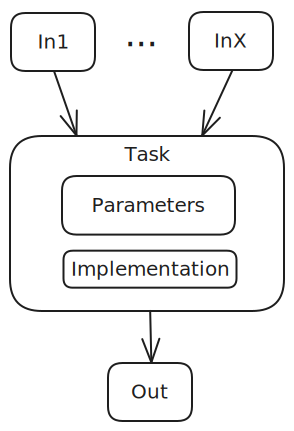

DV-Flow Fundamentals¶
Tasks¶
Tasks are the fundamental unit of behavior in a DV-Flow specification. Tasks typically build on another task – either in whole or in part.
{kind=link}
There are three key concepts of tasks to understand:
Task Inputs/Dependencies - A task may express dependencies on other tasks. Doing so has two effects:
A task is executed only after all its dependencies have executed
The task receives the union of all output data produced by its dependencies.
Executing a task results in outputs that are passed to any task that depends on it.
Task Implementation - A task implementation provides the behavior for a task. It is most common for tasks to be implemented in whole or in part by existing tasks. Users can also define their own tasks via several mechanisms. (see developer’s guide)
Task Parameters - A task may specify a set of parameters that it accepts. Users of that task may modify the parameter values
Let’s look at two examples using tasks implemented by the standard library (ref) to illustrate these concepts.
package:
name: p1
tasks:
- name: SayHello
uses: std.Message
with:
msg: "Hello World!"
The code above specifies a package (named p1) that defines a single task named SayHello. The implementation of the task is provided by the standard library task Message (uses: std.Message). The Message task defines a parameter named msg, which specifies the message to display. Since we want to display “Hello World!”, we override the parameter value in our task.
Running the p1.SayHello task will result in the message “Hello World!” being displayed.
The example above showed the use of parameters, but not dataflow.
package:
name: p1
tasks:
- name: rtl_files
uses: std.FileSet
with:
base: "src/rtl"
include: "*.sv"
type: systemVerilogSource
- name: sim
uses: hdlsim.vlt.SimImage
needs: [rtl_files]
The example above shows simple dataflow. The std.FileSet task from the standard library produces a FileSet parameter based on the specified user input. In this case, the FileSet will contain a list of all SystemVerilog source files in the src/rtl sub-directory.
We identify all SystemVerilog source files because we want to compile them into a simulation image using the Verilator tool. The task sim uses the hdlsim.vlt.SimImage task from the hdlsim library to compile the source files. Note how the sim task specifies the rtl_files task as a dependency. This means that it will receive a list of the SystemVerilog source files paths identified by the rtl_files task.
Packages¶
Packages are used as package namespaces, and to support static configuration. Built-in packages (eg ‘std’) are always available. User-defined packages can be imported explicitly via filesystem path or be discovered via tool-specific package-path mechanisms.
Dataflow¶
Many build systems coordinate tasks via shared variables. For example, if lib2 has a dependency on lib1, then it uses a variable (eg LIB1_PATH) to reference lib1. For reliability, the value of these variables are typically set from above.
Shared and global data poses a flexility and scalability problem. Using global data to configure tools means that it’s impossible to use two different configurations as part of the same workflow. Coordinating via known paths requires all tasks to share the same filesystem, which limits where tasks can run, and limits opportunities for caching.
Consequently, DV-Flow tasks coordinate via parameter sets produced by a task and consumed by tasks that depend on the producing task.
package:
name: p1
tasks:
- name: rtl_files
uses: std.FileSet
with:
base: "src/rtl"
include: "*.sv"
type: systemVerilogSource
- name: sim
uses: hdlsim.vlt.SimImage
needs: [rtl_files]
In many cases, dataflow naturally falls out of the build flow. In the example above, for example, it’s natural to think of the simulation image ‘needing’ to have required source files. In cases where the parameter sets represent controls over tools in the flow, the production is explicit.